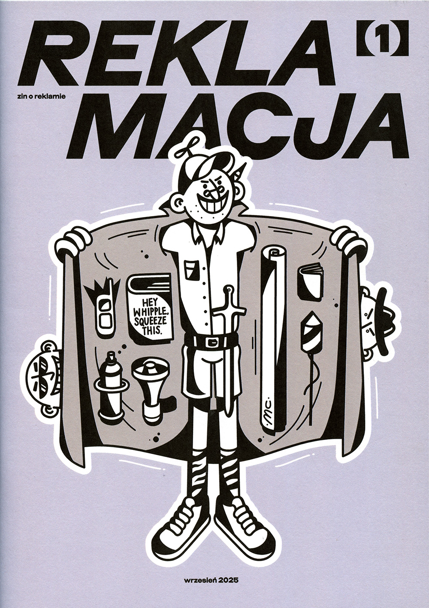
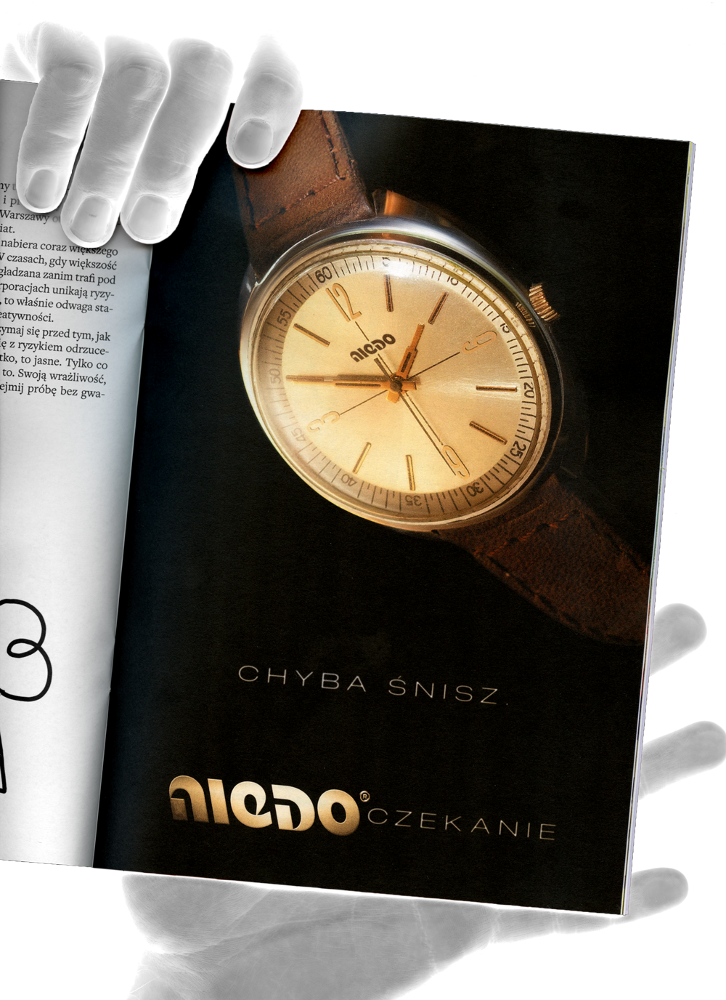
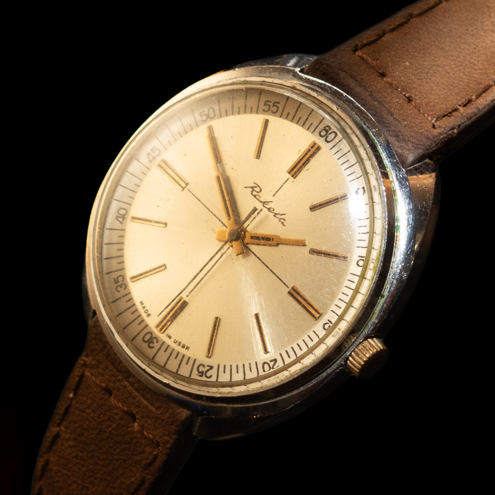
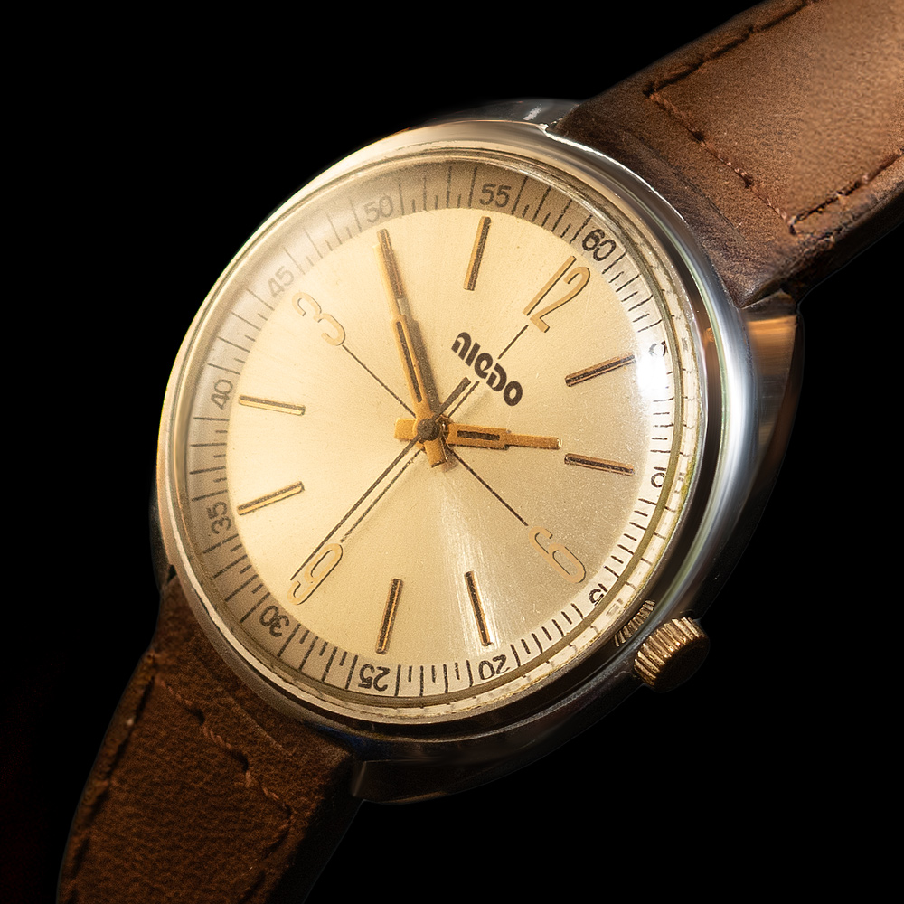

Niedoczekanie featured in REKLAMACJA ZINE 2025
TRANSLATION: You must be dreaming. / untranslatable idiom, literally "un/waiting" meaning that somebody will not live (or wait) to see something happen

cover art by Marcin Mokierów-Czołowski
THE BRIEF I was invited by Marta Tomczak and Marta Adamkowska to take part in a fan-zine. They gave me a task to create a full-page advertisement of an inexistent product that would fit the creative idea of their publication, which was:
ABOUT THE ZINE Advertisement in Poland is two faced: either safely ironically distanced or pumping the narratives of changing the world. Both seem overcautious. What about what really happens in advertising? Every day we are faced with bursts of creativity that are successfully packed into media placements and requirements of global CEOs. What happens to this brutally severed fragment? Where did the unnecessary surplus go? As Sorrentino would say, the most important thing is 'all the rest': inspirations, courageous slogans, off-the-wall ideas, huomour, surrealist in-words, cultural connotations, political opinions. That's why we are claiming reclamation. Not only to the adviertisememnt as it is, approaching it with a friendly, but attentive criticism. We are claiming reclamation to wasting the creative potential, that gets stuck between subsequent client revisions. The potential boiling over the advertising heads every day. That's why we created a special place just for it.




One of the joyful aspects of this project was the editing of the watch picture itself using traditional Photoshop blurs, healing brush, blending modes instead of generative fill and prompts. On a day-to-day basis when working on assets for big ecom clients this is a rarity.
There is no watch worth attention without a timeless logo, so the parody also included this retro geometric typography in a backwards slant to match the fact that the watch has its hour markers in reverse while minutes go the right way. This is not how time works.
© 2025 Mikołaj Grabowski